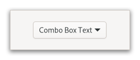

Struct gtk4::ComboBoxText
source · #[repr(transparent)]pub struct ComboBoxText { /* private fields */ }Expand description
Use DropDown with a StringList
instead
A ComboBoxText is a simple variant of ComboBox for text-only
use cases.

ComboBoxText hides the model-view complexity of ComboBox.
To create a ComboBoxText, use new() or
with_entry().
You can add items to a ComboBoxText with
append_text(),
insert_text() or
prepend_text() and remove options with
remove().
If the ComboBoxText contains an entry (via the
has-entry property), its contents can be retrieved
using active_text().
You should not call ComboBoxExt::set_model() or attempt to pack more
cells into this combo box via its CellLayout interface.
GtkComboBoxText as GtkBuildable
The ComboBoxText implementation of the Buildable interface supports
adding items directly using the <items> element and specifying <item>
elements for each item. Each <item> element can specify the “id”
corresponding to the appended text and also supports the regular
translation attributes “translatable”, “context” and “comments”.
Here is a UI definition fragment specifying ComboBoxText items:
<object class="GtkComboBoxText">
<items>
<item translatable="yes" id="factory">Factory</item>
<item translatable="yes" id="home">Home</item>
<item translatable="yes" id="subway">Subway</item>
</items>
</object>
CSS nodes
combobox
╰── box.linked
├── entry.combo
├── button.combo
╰── window.popup
ComboBoxText has a single CSS node with name combobox. It adds
the style class .combo to the main CSS nodes of its entry and button
children, and the .linked class to the node of its internal box.
Implements
ComboBoxExt, WidgetExt, glib::ObjectExt, AccessibleExt, BuildableExt, ConstraintTargetExt, CellEditableExt, CellLayoutExt, ComboBoxExtManual, WidgetExtManual, AccessibleExtManual, CellLayoutExtManual
Implementations§
source§impl ComboBoxText
impl ComboBoxText
sourcepub fn new() -> ComboBoxText
👎Deprecated: Since 4.10
pub fn new() -> ComboBoxText
sourcepub fn with_entry() -> ComboBoxText
👎Deprecated: Since 4.10
pub fn with_entry() -> ComboBoxText
Creates a new ComboBoxText with an entry.
Deprecated since 4.10
Use DropDown
Returns
a new ComboBoxText
sourcepub fn builder() -> ComboBoxTextBuilder
👎Deprecated: Since 4.10
pub fn builder() -> ComboBoxTextBuilder
Creates a new builder-pattern struct instance to construct ComboBoxText objects.
This method returns an instance of ComboBoxTextBuilder which can be used to create ComboBoxText objects.
sourcepub fn append_text(&self, text: &str)
👎Deprecated: Since 4.10
pub fn append_text(&self, text: &str)
Appends @text to the list of strings stored in @self.
This is the same as calling insert_text()
with a position of -1.
Deprecated since 4.10
Use DropDown
text
A string
sourcepub fn active_text(&self) -> Option<GString>
👎Deprecated: Since 4.10
pub fn active_text(&self) -> Option<GString>
Returns the currently active string in @self.
If no row is currently selected, None is returned.
If @self contains an entry, this function will
return its contents (which will not necessarily
be an item from the list).
Deprecated since 4.10
Use DropDown
Returns
a newly allocated string containing the currently active text. Must be freed with g_free().
sourcepub fn insert(&self, position: i32, id: Option<&str>, text: &str)
👎Deprecated: Since 4.10
pub fn insert(&self, position: i32, id: Option<&str>, text: &str)
Inserts @text at @position in the list of strings stored in @self.
If @id is non-None then it is used as the ID of the row.
See id-column.
If @position is negative then @text is appended.
Deprecated since 4.10
Use DropDown
position
An index to insert @text
id
a string ID for this value
text
A string to display
sourcepub fn insert_text(&self, position: i32, text: &str)
👎Deprecated: Since 4.10
pub fn insert_text(&self, position: i32, text: &str)
sourcepub fn prepend_text(&self, text: &str)
👎Deprecated: Since 4.10
pub fn prepend_text(&self, text: &str)
Prepends @text to the list of strings stored in @self.
This is the same as calling insert_text()
with a position of 0.
Deprecated since 4.10
Use DropDown
text
A string
sourcepub fn remove(&self, position: i32)
👎Deprecated: Since 4.10
pub fn remove(&self, position: i32)
Removes the string at @position from @self.
Deprecated since 4.10
Use DropDown
position
Index of the item to remove
sourcepub fn remove_all(&self)
👎Deprecated: Since 4.10
pub fn remove_all(&self)
Trait Implementations§
source§impl Clone for ComboBoxText
impl Clone for ComboBoxText
source§impl Debug for ComboBoxText
impl Debug for ComboBoxText
source§impl Default for ComboBoxText
impl Default for ComboBoxText
source§impl Display for ComboBoxText
impl Display for ComboBoxText
source§impl HasParamSpec for ComboBoxText
impl HasParamSpec for ComboBoxText
type ParamSpec = ParamSpecObject
§type SetValue = ComboBoxText
type SetValue = ComboBoxText
type BuilderFn = fn(_: &str) -> ParamSpecObjectBuilder<'_, ComboBoxText>
fn param_spec_builder() -> Self::BuilderFn
source§impl Hash for ComboBoxText
impl Hash for ComboBoxText
source§impl Ord for ComboBoxText
impl Ord for ComboBoxText
source§impl ParentClassIs for ComboBoxText
impl ParentClassIs for ComboBoxText
source§impl<OT: ObjectType> PartialEq<OT> for ComboBoxText
impl<OT: ObjectType> PartialEq<OT> for ComboBoxText
source§impl<OT: ObjectType> PartialOrd<OT> for ComboBoxText
impl<OT: ObjectType> PartialOrd<OT> for ComboBoxText
1.0.0 · source§fn le(&self, other: &Rhs) -> bool
fn le(&self, other: &Rhs) -> bool
self and other) and is used by the <=
operator. Read moresource§impl StaticType for ComboBoxText
impl StaticType for ComboBoxText
source§fn static_type() -> Type
fn static_type() -> Type
Self.impl Eq for ComboBoxText
impl IsA<Accessible> for ComboBoxText
impl IsA<Buildable> for ComboBoxText
impl IsA<CellEditable> for ComboBoxText
impl IsA<CellLayout> for ComboBoxText
impl IsA<ComboBox> for ComboBoxText
impl IsA<ConstraintTarget> for ComboBoxText
impl IsA<Widget> for ComboBoxText
Auto Trait Implementations§
impl RefUnwindSafe for ComboBoxText
impl !Send for ComboBoxText
impl !Sync for ComboBoxText
impl Unpin for ComboBoxText
impl UnwindSafe for ComboBoxText
Blanket Implementations§
source§impl<O> AccessibleExt for Owhere
O: IsA<Accessible>,
impl<O> AccessibleExt for Owhere O: IsA<Accessible>,
source§fn accessible_parent(&self) -> Option<Accessible>
fn accessible_parent(&self) -> Option<Accessible>
v4_10 only.source§fn accessible_role(&self) -> AccessibleRole
fn accessible_role(&self) -> AccessibleRole
source§fn at_context(&self) -> ATContext
fn at_context(&self) -> ATContext
v4_10 only.Accessible. Read moresource§fn bounds(&self) -> Option<(i32, i32, i32, i32)>
fn bounds(&self) -> Option<(i32, i32, i32, i32)>
v4_10 only.source§fn first_accessible_child(&self) -> Option<Accessible>
fn first_accessible_child(&self) -> Option<Accessible>
v4_10 only.source§fn next_accessible_sibling(&self) -> Option<Accessible>
fn next_accessible_sibling(&self) -> Option<Accessible>
v4_10 only.source§fn platform_state(&self, state: AccessiblePlatformState) -> bool
fn platform_state(&self, state: AccessiblePlatformState) -> bool
v4_10 only.source§fn reset_property(&self, property: AccessibleProperty)
fn reset_property(&self, property: AccessibleProperty)
source§fn reset_relation(&self, relation: AccessibleRelation)
fn reset_relation(&self, relation: AccessibleRelation)
source§fn reset_state(&self, state: AccessibleState)
fn reset_state(&self, state: AccessibleState)
source§fn set_accessible_parent(
&self,
parent: Option<&impl IsA<Accessible>>,
next_sibling: Option<&impl IsA<Accessible>>
)
fn set_accessible_parent( &self, parent: Option<&impl IsA<Accessible>>, next_sibling: Option<&impl IsA<Accessible>> )
v4_10 only.source§fn update_next_accessible_sibling(
&self,
new_sibling: Option<&impl IsA<Accessible>>
)
fn update_next_accessible_sibling( &self, new_sibling: Option<&impl IsA<Accessible>> )
v4_10 only.source§fn set_accessible_role(&self, accessible_role: AccessibleRole)
fn set_accessible_role(&self, accessible_role: AccessibleRole)
Accessible implementation. Read morefn connect_accessible_role_notify<F: Fn(&Self) + 'static>( &self, f: F ) -> SignalHandlerId
source§impl<O> AccessibleExtManual for Owhere
O: IsA<Accessible>,
impl<O> AccessibleExtManual for Owhere O: IsA<Accessible>,
source§fn update_property(&self, properties: &[Property<'_>])
fn update_property(&self, properties: &[Property<'_>])
source§fn update_relation(&self, relations: &[Relation<'_>])
fn update_relation(&self, relations: &[Relation<'_>])
source§fn update_state(&self, states: &[State])
fn update_state(&self, states: &[State])
source§impl<T> BorrowMut<T> for Twhere
T: ?Sized,
impl<T> BorrowMut<T> for Twhere T: ?Sized,
source§fn borrow_mut(&mut self) -> &mut T
fn borrow_mut(&mut self) -> &mut T
source§impl<O> BuildableExt for Owhere
O: IsA<Buildable>,
impl<O> BuildableExt for Owhere O: IsA<Buildable>,
source§impl<T> Cast for Twhere
T: ObjectType,
impl<T> Cast for Twhere T: ObjectType,
source§fn upcast<T>(self) -> Twhere
T: ObjectType,
Self: IsA<T>,
fn upcast<T>(self) -> Twhere T: ObjectType, Self: IsA<T>,
T. Read moresource§fn upcast_ref<T>(&self) -> &Twhere
T: ObjectType,
Self: IsA<T>,
fn upcast_ref<T>(&self) -> &Twhere T: ObjectType, Self: IsA<T>,
T. Read moresource§fn downcast<T>(self) -> Result<T, Self>where
T: ObjectType,
Self: MayDowncastTo<T>,
fn downcast<T>(self) -> Result<T, Self>where T: ObjectType, Self: MayDowncastTo<T>,
T. Read moresource§fn downcast_ref<T>(&self) -> Option<&T>where
T: ObjectType,
Self: MayDowncastTo<T>,
fn downcast_ref<T>(&self) -> Option<&T>where T: ObjectType, Self: MayDowncastTo<T>,
T. Read moresource§fn dynamic_cast<T>(self) -> Result<T, Self>where
T: ObjectType,
fn dynamic_cast<T>(self) -> Result<T, Self>where T: ObjectType,
T. This handles upcasting, downcasting
and casting between interface and interface implementors. All checks are performed at
runtime, while upcast will do many checks at compile-time already. downcast will
perform the same checks at runtime as dynamic_cast, but will also ensure some amount of
compile-time safety. Read moresource§fn dynamic_cast_ref<T>(&self) -> Option<&T>where
T: ObjectType,
fn dynamic_cast_ref<T>(&self) -> Option<&T>where T: ObjectType,
T. This handles upcasting, downcasting
and casting between interface and interface implementors. All checks are performed at
runtime, while downcast and upcast will do many checks at compile-time already. Read moresource§unsafe fn unsafe_cast<T>(self) -> Twhere
T: ObjectType,
unsafe fn unsafe_cast<T>(self) -> Twhere T: ObjectType,
T unconditionally. Read moresource§unsafe fn unsafe_cast_ref<T>(&self) -> &Twhere
T: ObjectType,
unsafe fn unsafe_cast_ref<T>(&self) -> &Twhere T: ObjectType,
&T unconditionally. Read moresource§impl<O> CellEditableExt for Owhere
O: IsA<CellEditable>,
impl<O> CellEditableExt for Owhere O: IsA<CellEditable>,
source§fn editing_done(&self)
fn editing_done(&self)
GtkCellEditable::editing-done signal. Read moresource§fn remove_widget(&self)
fn remove_widget(&self)
GtkCellEditable::remove-widget signal. Read moresource§fn start_editing(&self, event: Option<impl AsRef<Event>>)
fn start_editing(&self, event: Option<impl AsRef<Event>>)
source§fn is_editing_canceled(&self) -> bool
fn is_editing_canceled(&self) -> bool
source§fn set_editing_canceled(&self, editing_canceled: bool)
fn set_editing_canceled(&self, editing_canceled: bool)
source§fn connect_editing_done<F: Fn(&Self) + 'static>(&self, f: F) -> SignalHandlerId
fn connect_editing_done<F: Fn(&Self) + 'static>(&self, f: F) -> SignalHandlerId
source§fn connect_remove_widget<F: Fn(&Self) + 'static>(&self, f: F) -> SignalHandlerId
fn connect_remove_widget<F: Fn(&Self) + 'static>(&self, f: F) -> SignalHandlerId
source§fn connect_editing_canceled_notify<F: Fn(&Self) + 'static>(
&self,
f: F
) -> SignalHandlerId
fn connect_editing_canceled_notify<F: Fn(&Self) + 'static>( &self, f: F ) -> SignalHandlerId
source§impl<O> CellLayoutExt for Owhere
O: IsA<CellLayout>,
impl<O> CellLayoutExt for Owhere O: IsA<CellLayout>,
source§fn add_attribute(
&self,
cell: &impl IsA<CellRenderer>,
attribute: &str,
column: i32
)
fn add_attribute( &self, cell: &impl IsA<CellRenderer>, attribute: &str, column: i32 )
source§fn clear(&self)
fn clear(&self)
source§fn clear_attributes(&self, cell: &impl IsA<CellRenderer>)
fn clear_attributes(&self, cell: &impl IsA<CellRenderer>)
source§fn cells(&self) -> Vec<CellRenderer>
fn cells(&self) -> Vec<CellRenderer>
source§fn pack_start(&self, cell: &impl IsA<CellRenderer>, expand: bool)
fn pack_start(&self, cell: &impl IsA<CellRenderer>, expand: bool)
source§fn reorder(&self, cell: &impl IsA<CellRenderer>, position: i32)
fn reorder(&self, cell: &impl IsA<CellRenderer>, position: i32)
source§fn set_cell_data_func<P: Fn(&CellLayout, &CellRenderer, &TreeModel, &TreeIter) + 'static>(
&self,
cell: &impl IsA<CellRenderer>,
func: P
)
fn set_cell_data_func<P: Fn(&CellLayout, &CellRenderer, &TreeModel, &TreeIter) + 'static>( &self, cell: &impl IsA<CellRenderer>, func: P )
CellLayoutDataFunc to use for @self. Read moresource§impl<O> CellLayoutExtManual for Owhere
O: IsA<CellLayout>,
impl<O> CellLayoutExtManual for Owhere O: IsA<CellLayout>,
source§fn set_attributes(
&self,
cell: &impl IsA<CellRenderer>,
attributes: &[(&str, i32)]
)
fn set_attributes( &self, cell: &impl IsA<CellRenderer>, attributes: &[(&str, i32)] )
source§fn unset_cell_data_func(&self, cell: &impl IsA<CellRenderer>)
fn unset_cell_data_func(&self, cell: &impl IsA<CellRenderer>)
source§impl<O> ComboBoxExt for Owhere
O: IsA<ComboBox>,
impl<O> ComboBoxExt for Owhere O: IsA<ComboBox>,
source§fn active_id(&self) -> Option<GString>
fn active_id(&self) -> Option<GString>
source§fn active_iter(&self) -> Option<TreeIter>
fn active_iter(&self) -> Option<TreeIter>
source§fn child(&self) -> Option<Widget>
fn child(&self) -> Option<Widget>
source§fn entry_text_column(&self) -> i32
fn entry_text_column(&self) -> i32
source§fn has_entry(&self) -> bool
fn has_entry(&self) -> bool
source§fn id_column(&self) -> i32
fn id_column(&self) -> i32
source§fn is_popup_fixed_width(&self) -> bool
fn is_popup_fixed_width(&self) -> bool
source§fn popup_for_device(&self, device: &Device)
fn popup_for_device(&self, device: &Device)
source§fn set_active_id(&self, active_id: Option<&str>) -> bool
fn set_active_id(&self, active_id: Option<&str>) -> bool
source§fn set_active_iter(&self, iter: Option<&TreeIter>)
fn set_active_iter(&self, iter: Option<&TreeIter>)
source§fn set_child(&self, child: Option<&impl IsA<Widget>>)
fn set_child(&self, child: Option<&impl IsA<Widget>>)
source§fn set_entry_text_column(&self, text_column: i32)
fn set_entry_text_column(&self, text_column: i32)
source§fn set_id_column(&self, id_column: i32)
fn set_id_column(&self, id_column: i32)
source§fn set_model(&self, model: Option<&impl IsA<TreeModel>>)
fn set_model(&self, model: Option<&impl IsA<TreeModel>>)
source§fn set_popup_fixed_width(&self, fixed: bool)
fn set_popup_fixed_width(&self, fixed: bool)
source§fn set_row_separator_func<P: Fn(&TreeModel, &TreeIter) -> bool + 'static>(
&self,
func: P
)
fn set_row_separator_func<P: Fn(&TreeModel, &TreeIter) -> bool + 'static>( &self, func: P )
source§fn has_frame(&self) -> bool
fn has_frame(&self) -> bool
has-frame property controls whether a frame is drawn around the entry.source§fn set_has_frame(&self, has_frame: bool)
fn set_has_frame(&self, has_frame: bool)
has-frame property controls whether a frame is drawn around the entry.source§fn is_popup_shown(&self) -> bool
fn is_popup_shown(&self) -> bool
source§fn connect_activate<F: Fn(&Self) + 'static>(&self, f: F) -> SignalHandlerId
fn connect_activate<F: Fn(&Self) + 'static>(&self, f: F) -> SignalHandlerId
v4_6 only.source§fn emit_activate(&self)
fn emit_activate(&self)
v4_6 only.source§fn connect_changed<F: Fn(&Self) + 'static>(&self, f: F) -> SignalHandlerId
fn connect_changed<F: Fn(&Self) + 'static>(&self, f: F) -> SignalHandlerId
source§fn connect_format_entry_text<F: Fn(&Self, &str) -> String + 'static>(
&self,
f: F
) -> SignalHandlerId
fn connect_format_entry_text<F: Fn(&Self, &str) -> String + 'static>( &self, f: F ) -> SignalHandlerId
source§fn connect_move_active<F: Fn(&Self, ScrollType) + 'static>(
&self,
f: F
) -> SignalHandlerId
fn connect_move_active<F: Fn(&Self, ScrollType) + 'static>( &self, f: F ) -> SignalHandlerId
source§fn emit_move_active(&self, scroll_type: ScrollType)
fn emit_move_active(&self, scroll_type: ScrollType)
source§fn connect_popdown<F: Fn(&Self) -> bool + 'static>(
&self,
f: F
) -> SignalHandlerId
fn connect_popdown<F: Fn(&Self) -> bool + 'static>( &self, f: F ) -> SignalHandlerId
source§fn emit_popdown(&self) -> bool
fn emit_popdown(&self) -> bool
source§fn connect_popup<F: Fn(&Self) + 'static>(&self, f: F) -> SignalHandlerId
fn connect_popup<F: Fn(&Self) + 'static>(&self, f: F) -> SignalHandlerId
source§fn emit_popup(&self)
fn emit_popup(&self)
source§fn connect_active_notify<F: Fn(&Self) + 'static>(&self, f: F) -> SignalHandlerId
fn connect_active_notify<F: Fn(&Self) + 'static>(&self, f: F) -> SignalHandlerId
source§fn connect_active_id_notify<F: Fn(&Self) + 'static>(
&self,
f: F
) -> SignalHandlerId
fn connect_active_id_notify<F: Fn(&Self) + 'static>( &self, f: F ) -> SignalHandlerId
source§fn connect_child_notify<F: Fn(&Self) + 'static>(&self, f: F) -> SignalHandlerId
fn connect_child_notify<F: Fn(&Self) + 'static>(&self, f: F) -> SignalHandlerId
source§fn connect_entry_text_column_notify<F: Fn(&Self) + 'static>(
&self,
f: F
) -> SignalHandlerId
fn connect_entry_text_column_notify<F: Fn(&Self) + 'static>( &self, f: F ) -> SignalHandlerId
source§fn connect_has_frame_notify<F: Fn(&Self) + 'static>(
&self,
f: F
) -> SignalHandlerId
fn connect_has_frame_notify<F: Fn(&Self) + 'static>( &self, f: F ) -> SignalHandlerId
source§fn connect_id_column_notify<F: Fn(&Self) + 'static>(
&self,
f: F
) -> SignalHandlerId
fn connect_id_column_notify<F: Fn(&Self) + 'static>( &self, f: F ) -> SignalHandlerId
source§fn connect_model_notify<F: Fn(&Self) + 'static>(&self, f: F) -> SignalHandlerId
fn connect_model_notify<F: Fn(&Self) + 'static>(&self, f: F) -> SignalHandlerId
source§fn connect_popup_fixed_width_notify<F: Fn(&Self) + 'static>(
&self,
f: F
) -> SignalHandlerId
fn connect_popup_fixed_width_notify<F: Fn(&Self) + 'static>( &self, f: F ) -> SignalHandlerId
source§fn connect_popup_shown_notify<F: Fn(&Self) + 'static>(
&self,
f: F
) -> SignalHandlerId
fn connect_popup_shown_notify<F: Fn(&Self) + 'static>( &self, f: F ) -> SignalHandlerId
source§impl<O> ComboBoxExtManual for Owhere
O: IsA<ComboBox>,
impl<O> ComboBoxExtManual for Owhere O: IsA<ComboBox>,
source§fn unset_row_separator_func(&self)
fn unset_row_separator_func(&self)
source§impl<T> FromGlibContainerAsVec<<T as GlibPtrDefault>::GlibType, *const GList> for Twhere
T: GlibPtrDefault + FromGlibPtrNone<<T as GlibPtrDefault>::GlibType> + FromGlibPtrFull<<T as GlibPtrDefault>::GlibType>,
impl<T> FromGlibContainerAsVec<<T as GlibPtrDefault>::GlibType, *const GList> for Twhere T: GlibPtrDefault + FromGlibPtrNone<<T as GlibPtrDefault>::GlibType> + FromGlibPtrFull<<T as GlibPtrDefault>::GlibType>,
source§impl<T> FromGlibContainerAsVec<<T as GlibPtrDefault>::GlibType, *const GPtrArray> for Twhere
T: GlibPtrDefault + FromGlibPtrNone<<T as GlibPtrDefault>::GlibType> + FromGlibPtrFull<<T as GlibPtrDefault>::GlibType>,
impl<T> FromGlibContainerAsVec<<T as GlibPtrDefault>::GlibType, *const GPtrArray> for Twhere T: GlibPtrDefault + FromGlibPtrNone<<T as GlibPtrDefault>::GlibType> + FromGlibPtrFull<<T as GlibPtrDefault>::GlibType>,
source§impl<T> FromGlibContainerAsVec<<T as GlibPtrDefault>::GlibType, *const GSList> for Twhere
T: GlibPtrDefault + FromGlibPtrNone<<T as GlibPtrDefault>::GlibType> + FromGlibPtrFull<<T as GlibPtrDefault>::GlibType>,
impl<T> FromGlibContainerAsVec<<T as GlibPtrDefault>::GlibType, *const GSList> for Twhere T: GlibPtrDefault + FromGlibPtrNone<<T as GlibPtrDefault>::GlibType> + FromGlibPtrFull<<T as GlibPtrDefault>::GlibType>,
source§impl<T> FromGlibContainerAsVec<<T as GlibPtrDefault>::GlibType, *mut GList> for Twhere
T: GlibPtrDefault + FromGlibPtrNone<<T as GlibPtrDefault>::GlibType> + FromGlibPtrFull<<T as GlibPtrDefault>::GlibType>,
impl<T> FromGlibContainerAsVec<<T as GlibPtrDefault>::GlibType, *mut GList> for Twhere T: GlibPtrDefault + FromGlibPtrNone<<T as GlibPtrDefault>::GlibType> + FromGlibPtrFull<<T as GlibPtrDefault>::GlibType>,
source§impl<T> FromGlibContainerAsVec<<T as GlibPtrDefault>::GlibType, *mut GPtrArray> for Twhere
T: GlibPtrDefault + FromGlibPtrNone<<T as GlibPtrDefault>::GlibType> + FromGlibPtrFull<<T as GlibPtrDefault>::GlibType>,
impl<T> FromGlibContainerAsVec<<T as GlibPtrDefault>::GlibType, *mut GPtrArray> for Twhere T: GlibPtrDefault + FromGlibPtrNone<<T as GlibPtrDefault>::GlibType> + FromGlibPtrFull<<T as GlibPtrDefault>::GlibType>,
source§impl<T> FromGlibContainerAsVec<<T as GlibPtrDefault>::GlibType, *mut GSList> for Twhere
T: GlibPtrDefault + FromGlibPtrNone<<T as GlibPtrDefault>::GlibType> + FromGlibPtrFull<<T as GlibPtrDefault>::GlibType>,
impl<T> FromGlibContainerAsVec<<T as GlibPtrDefault>::GlibType, *mut GSList> for Twhere T: GlibPtrDefault + FromGlibPtrNone<<T as GlibPtrDefault>::GlibType> + FromGlibPtrFull<<T as GlibPtrDefault>::GlibType>,
source§impl<T> FromGlibPtrArrayContainerAsVec<<T as GlibPtrDefault>::GlibType, *const GList> for Twhere
T: GlibPtrDefault + FromGlibPtrNone<<T as GlibPtrDefault>::GlibType> + FromGlibPtrFull<<T as GlibPtrDefault>::GlibType>,
impl<T> FromGlibPtrArrayContainerAsVec<<T as GlibPtrDefault>::GlibType, *const GList> for Twhere T: GlibPtrDefault + FromGlibPtrNone<<T as GlibPtrDefault>::GlibType> + FromGlibPtrFull<<T as GlibPtrDefault>::GlibType>,
source§impl<T> FromGlibPtrArrayContainerAsVec<<T as GlibPtrDefault>::GlibType, *const GPtrArray> for Twhere
T: GlibPtrDefault + FromGlibPtrNone<<T as GlibPtrDefault>::GlibType> + FromGlibPtrFull<<T as GlibPtrDefault>::GlibType>,
impl<T> FromGlibPtrArrayContainerAsVec<<T as GlibPtrDefault>::GlibType, *const GPtrArray> for Twhere T: GlibPtrDefault + FromGlibPtrNone<<T as GlibPtrDefault>::GlibType> + FromGlibPtrFull<<T as GlibPtrDefault>::GlibType>,
source§impl<T> FromGlibPtrArrayContainerAsVec<<T as GlibPtrDefault>::GlibType, *const GSList> for Twhere
T: GlibPtrDefault + FromGlibPtrNone<<T as GlibPtrDefault>::GlibType> + FromGlibPtrFull<<T as GlibPtrDefault>::GlibType>,
impl<T> FromGlibPtrArrayContainerAsVec<<T as GlibPtrDefault>::GlibType, *const GSList> for Twhere T: GlibPtrDefault + FromGlibPtrNone<<T as GlibPtrDefault>::GlibType> + FromGlibPtrFull<<T as GlibPtrDefault>::GlibType>,
source§impl<T> FromGlibPtrArrayContainerAsVec<<T as GlibPtrDefault>::GlibType, *mut GList> for Twhere
T: GlibPtrDefault + FromGlibPtrNone<<T as GlibPtrDefault>::GlibType> + FromGlibPtrFull<<T as GlibPtrDefault>::GlibType>,
impl<T> FromGlibPtrArrayContainerAsVec<<T as GlibPtrDefault>::GlibType, *mut GList> for Twhere T: GlibPtrDefault + FromGlibPtrNone<<T as GlibPtrDefault>::GlibType> + FromGlibPtrFull<<T as GlibPtrDefault>::GlibType>,
source§impl<T> FromGlibPtrArrayContainerAsVec<<T as GlibPtrDefault>::GlibType, *mut GPtrArray> for Twhere
T: GlibPtrDefault + FromGlibPtrNone<<T as GlibPtrDefault>::GlibType> + FromGlibPtrFull<<T as GlibPtrDefault>::GlibType>,
impl<T> FromGlibPtrArrayContainerAsVec<<T as GlibPtrDefault>::GlibType, *mut GPtrArray> for Twhere T: GlibPtrDefault + FromGlibPtrNone<<T as GlibPtrDefault>::GlibType> + FromGlibPtrFull<<T as GlibPtrDefault>::GlibType>,
source§impl<T> FromGlibPtrArrayContainerAsVec<<T as GlibPtrDefault>::GlibType, *mut GSList> for Twhere
T: GlibPtrDefault + FromGlibPtrNone<<T as GlibPtrDefault>::GlibType> + FromGlibPtrFull<<T as GlibPtrDefault>::GlibType>,
impl<T> FromGlibPtrArrayContainerAsVec<<T as GlibPtrDefault>::GlibType, *mut GSList> for Twhere T: GlibPtrDefault + FromGlibPtrNone<<T as GlibPtrDefault>::GlibType> + FromGlibPtrFull<<T as GlibPtrDefault>::GlibType>,
source§impl<O> GObjectPropertyExpressionExt for Owhere
O: IsA<Object>,
impl<O> GObjectPropertyExpressionExt for Owhere O: IsA<Object>,
source§fn property_expression(&self, property_name: &str) -> PropertyExpression
fn property_expression(&self, property_name: &str) -> PropertyExpression
source§fn property_expression_weak(&self, property_name: &str) -> PropertyExpression
fn property_expression_weak(&self, property_name: &str) -> PropertyExpression
source§fn this_expression(property_name: &str) -> PropertyExpression
fn this_expression(property_name: &str) -> PropertyExpression
this object.source§impl<T> IntoClosureReturnValue for Twhere
T: Into<Value>,
impl<T> IntoClosureReturnValue for Twhere T: Into<Value>,
fn into_closure_return_value(self) -> Option<Value>
source§impl<U> IsSubclassableExt for Uwhere
U: IsClass + ParentClassIs,
impl<U> IsSubclassableExt for Uwhere U: IsClass + ParentClassIs,
fn parent_class_init<T>(class: &mut Class<U>)where T: ObjectSubclass, <U as ParentClassIs>::Parent: IsSubclassable<T>,
fn parent_instance_init<T>(instance: &mut InitializingObject<T>)where T: ObjectSubclass, <U as ParentClassIs>::Parent: IsSubclassable<T>,
source§impl<T> ObjectExt for Twhere
T: ObjectType,
impl<T> ObjectExt for Twhere T: ObjectType,
source§fn is<U>(&self) -> boolwhere
U: StaticType,
fn is<U>(&self) -> boolwhere U: StaticType,
true if the object is an instance of (can be cast to) T.source§fn object_class(&self) -> &Class<Object>
fn object_class(&self) -> &Class<Object>
ObjectClass of the object. Read moresource§fn class_of<U>(&self) -> Option<&Class<U>>where
U: IsClass,
fn class_of<U>(&self) -> Option<&Class<U>>where U: IsClass,
T. Read moresource§fn interface<U>(&self) -> Option<InterfaceRef<'_, U>>where
U: IsInterface,
fn interface<U>(&self) -> Option<InterfaceRef<'_, U>>where U: IsInterface,
T of the object. Read moresource§fn set_property_from_value(&self, property_name: &str, value: &Value)
fn set_property_from_value(&self, property_name: &str, value: &Value)
source§fn set_properties(&self, property_values: &[(&str, &dyn ToValue)])
fn set_properties(&self, property_values: &[(&str, &dyn ToValue)])
source§fn set_properties_from_value(&self, property_values: &[(&str, Value)])
fn set_properties_from_value(&self, property_values: &[(&str, Value)])
source§fn property<V>(&self, property_name: &str) -> Vwhere
V: for<'b> FromValue<'b> + 'static,
fn property<V>(&self, property_name: &str) -> Vwhere V: for<'b> FromValue<'b> + 'static,
property_name of the object and cast it to the type V. Read moresource§fn property_value(&self, property_name: &str) -> Value
fn property_value(&self, property_name: &str) -> Value
property_name of the object. Read moresource§fn property_type(&self, property_name: &str) -> Option<Type>
fn property_type(&self, property_name: &str) -> Option<Type>
property_name of this object. Read moresource§fn find_property(&self, property_name: &str) -> Option<ParamSpec>
fn find_property(&self, property_name: &str) -> Option<ParamSpec>
ParamSpec of the property property_name of this object.source§fn list_properties(&self) -> PtrSlice<ParamSpec>
fn list_properties(&self) -> PtrSlice<ParamSpec>
ParamSpec of the properties of this object.source§fn freeze_notify(&self) -> PropertyNotificationFreezeGuard
fn freeze_notify(&self) -> PropertyNotificationFreezeGuard
source§unsafe fn set_qdata<QD>(&self, key: Quark, value: QD)where
QD: 'static,
unsafe fn set_qdata<QD>(&self, key: Quark, value: QD)where QD: 'static,
key. Read moresource§unsafe fn qdata<QD>(&self, key: Quark) -> Option<NonNull<QD>>where
QD: 'static,
unsafe fn qdata<QD>(&self, key: Quark) -> Option<NonNull<QD>>where QD: 'static,
key. Read moresource§unsafe fn steal_qdata<QD>(&self, key: Quark) -> Option<QD>where
QD: 'static,
unsafe fn steal_qdata<QD>(&self, key: Quark) -> Option<QD>where QD: 'static,
key. Read moresource§unsafe fn set_data<QD>(&self, key: &str, value: QD)where
QD: 'static,
unsafe fn set_data<QD>(&self, key: &str, value: QD)where QD: 'static,
key. Read moresource§unsafe fn data<QD>(&self, key: &str) -> Option<NonNull<QD>>where
QD: 'static,
unsafe fn data<QD>(&self, key: &str) -> Option<NonNull<QD>>where QD: 'static,
key. Read moresource§unsafe fn steal_data<QD>(&self, key: &str) -> Option<QD>where
QD: 'static,
unsafe fn steal_data<QD>(&self, key: &str) -> Option<QD>where QD: 'static,
key. Read moresource§fn block_signal(&self, handler_id: &SignalHandlerId)
fn block_signal(&self, handler_id: &SignalHandlerId)
source§fn unblock_signal(&self, handler_id: &SignalHandlerId)
fn unblock_signal(&self, handler_id: &SignalHandlerId)
source§fn stop_signal_emission(&self, signal_id: SignalId, detail: Option<Quark>)
fn stop_signal_emission(&self, signal_id: SignalId, detail: Option<Quark>)
source§fn stop_signal_emission_by_name(&self, signal_name: &str)
fn stop_signal_emission_by_name(&self, signal_name: &str)
source§fn connect<F>(
&self,
signal_name: &str,
after: bool,
callback: F
) -> SignalHandlerIdwhere
F: Fn(&[Value]) -> Option<Value> + Send + Sync + 'static,
fn connect<F>( &self, signal_name: &str, after: bool, callback: F ) -> SignalHandlerIdwhere F: Fn(&[Value]) -> Option<Value> + Send + Sync + 'static,
signal_name on this object. Read moresource§fn connect_id<F>(
&self,
signal_id: SignalId,
details: Option<Quark>,
after: bool,
callback: F
) -> SignalHandlerIdwhere
F: Fn(&[Value]) -> Option<Value> + Send + Sync + 'static,
fn connect_id<F>( &self, signal_id: SignalId, details: Option<Quark>, after: bool, callback: F ) -> SignalHandlerIdwhere F: Fn(&[Value]) -> Option<Value> + Send + Sync + 'static,
signal_id on this object. Read moresource§fn connect_local<F>(
&self,
signal_name: &str,
after: bool,
callback: F
) -> SignalHandlerIdwhere
F: Fn(&[Value]) -> Option<Value> + 'static,
fn connect_local<F>( &self, signal_name: &str, after: bool, callback: F ) -> SignalHandlerIdwhere F: Fn(&[Value]) -> Option<Value> + 'static,
signal_name on this object. Read moresource§fn connect_local_id<F>(
&self,
signal_id: SignalId,
details: Option<Quark>,
after: bool,
callback: F
) -> SignalHandlerIdwhere
F: Fn(&[Value]) -> Option<Value> + 'static,
fn connect_local_id<F>( &self, signal_id: SignalId, details: Option<Quark>, after: bool, callback: F ) -> SignalHandlerIdwhere F: Fn(&[Value]) -> Option<Value> + 'static,
signal_id on this object. Read moresource§unsafe fn connect_unsafe<F>(
&self,
signal_name: &str,
after: bool,
callback: F
) -> SignalHandlerIdwhere
F: Fn(&[Value]) -> Option<Value>,
unsafe fn connect_unsafe<F>( &self, signal_name: &str, after: bool, callback: F ) -> SignalHandlerIdwhere F: Fn(&[Value]) -> Option<Value>,
signal_name on this object. Read moresource§unsafe fn connect_unsafe_id<F>(
&self,
signal_id: SignalId,
details: Option<Quark>,
after: bool,
callback: F
) -> SignalHandlerIdwhere
F: Fn(&[Value]) -> Option<Value>,
unsafe fn connect_unsafe_id<F>( &self, signal_id: SignalId, details: Option<Quark>, after: bool, callback: F ) -> SignalHandlerIdwhere F: Fn(&[Value]) -> Option<Value>,
signal_id on this object. Read moresource§fn connect_closure(
&self,
signal_name: &str,
after: bool,
closure: RustClosure
) -> SignalHandlerId
fn connect_closure( &self, signal_name: &str, after: bool, closure: RustClosure ) -> SignalHandlerId
signal_name on this object. Read moresource§fn connect_closure_id(
&self,
signal_id: SignalId,
details: Option<Quark>,
after: bool,
closure: RustClosure
) -> SignalHandlerId
fn connect_closure_id( &self, signal_id: SignalId, details: Option<Quark>, after: bool, closure: RustClosure ) -> SignalHandlerId
signal_id on this object. Read moresource§fn watch_closure(&self, closure: &impl AsRef<Closure>)
fn watch_closure(&self, closure: &impl AsRef<Closure>)
closure to the lifetime of the object. When
the object’s reference count drops to zero, the closure will be
invalidated. An invalidated closure will ignore any calls to
invoke_with_values, or
invoke when using Rust closures.source§fn emit<R>(&self, signal_id: SignalId, args: &[&dyn ToValue]) -> Rwhere
R: TryFromClosureReturnValue,
fn emit<R>(&self, signal_id: SignalId, args: &[&dyn ToValue]) -> Rwhere R: TryFromClosureReturnValue,
source§fn emit_with_values(&self, signal_id: SignalId, args: &[Value]) -> Option<Value>
fn emit_with_values(&self, signal_id: SignalId, args: &[Value]) -> Option<Value>
Self::emit but takes Value for the arguments.source§fn emit_by_name<R>(&self, signal_name: &str, args: &[&dyn ToValue]) -> Rwhere
R: TryFromClosureReturnValue,
fn emit_by_name<R>(&self, signal_name: &str, args: &[&dyn ToValue]) -> Rwhere R: TryFromClosureReturnValue,
source§fn emit_by_name_with_values(
&self,
signal_name: &str,
args: &[Value]
) -> Option<Value>
fn emit_by_name_with_values( &self, signal_name: &str, args: &[Value] ) -> Option<Value>
source§fn emit_by_name_with_details<R>(
&self,
signal_name: &str,
details: Quark,
args: &[&dyn ToValue]
) -> Rwhere
R: TryFromClosureReturnValue,
fn emit_by_name_with_details<R>( &self, signal_name: &str, details: Quark, args: &[&dyn ToValue] ) -> Rwhere R: TryFromClosureReturnValue,
source§fn emit_by_name_with_details_and_values(
&self,
signal_name: &str,
details: Quark,
args: &[Value]
) -> Option<Value>
fn emit_by_name_with_details_and_values( &self, signal_name: &str, details: Quark, args: &[Value] ) -> Option<Value>
source§fn emit_with_details<R>(
&self,
signal_id: SignalId,
details: Quark,
args: &[&dyn ToValue]
) -> Rwhere
R: TryFromClosureReturnValue,
fn emit_with_details<R>( &self, signal_id: SignalId, details: Quark, args: &[&dyn ToValue] ) -> Rwhere R: TryFromClosureReturnValue,
source§fn emit_with_details_and_values(
&self,
signal_id: SignalId,
details: Quark,
args: &[Value]
) -> Option<Value>
fn emit_with_details_and_values( &self, signal_id: SignalId, details: Quark, args: &[Value] ) -> Option<Value>
source§fn disconnect(&self, handler_id: SignalHandlerId)
fn disconnect(&self, handler_id: SignalHandlerId)
source§fn connect_notify<F>(&self, name: Option<&str>, f: F) -> SignalHandlerIdwhere
F: Fn(&T, &ParamSpec) + Send + Sync + 'static,
fn connect_notify<F>(&self, name: Option<&str>, f: F) -> SignalHandlerIdwhere F: Fn(&T, &ParamSpec) + Send + Sync + 'static,
notify signal of the object. Read moresource§fn connect_notify_local<F>(&self, name: Option<&str>, f: F) -> SignalHandlerIdwhere
F: Fn(&T, &ParamSpec) + 'static,
fn connect_notify_local<F>(&self, name: Option<&str>, f: F) -> SignalHandlerIdwhere F: Fn(&T, &ParamSpec) + 'static,
notify signal of the object. Read moresource§unsafe fn connect_notify_unsafe<F>(
&self,
name: Option<&str>,
f: F
) -> SignalHandlerIdwhere
F: Fn(&T, &ParamSpec),
unsafe fn connect_notify_unsafe<F>( &self, name: Option<&str>, f: F ) -> SignalHandlerIdwhere F: Fn(&T, &ParamSpec),
notify signal of the object. Read moresource§fn notify(&self, property_name: &str)
fn notify(&self, property_name: &str)
source§fn notify_by_pspec(&self, pspec: &ParamSpec)
fn notify_by_pspec(&self, pspec: &ParamSpec)
source§fn add_weak_ref_notify<F>(&self, f: F) -> WeakRefNotify<T>where
F: FnOnce() + Send + 'static,
fn add_weak_ref_notify<F>(&self, f: F) -> WeakRefNotify<T>where F: FnOnce() + Send + 'static,
source§fn add_weak_ref_notify_local<F>(&self, f: F) -> WeakRefNotify<T>where
F: FnOnce() + 'static,
fn add_weak_ref_notify_local<F>(&self, f: F) -> WeakRefNotify<T>where F: FnOnce() + 'static,
source§fn bind_property<'f, 't, O, 'a>(
&'a self,
source_property: &'a str,
target: &'a O,
target_property: &'a str
) -> BindingBuilder<'a, 'f, 't>where
O: ObjectType,
fn bind_property<'f, 't, O, 'a>( &'a self, source_property: &'a str, target: &'a O, target_property: &'a str ) -> BindingBuilder<'a, 'f, 't>where O: ObjectType,
source§unsafe fn run_dispose(&self)
unsafe fn run_dispose(&self)
source§impl<T> PropertyGet for Twhere
T: HasParamSpec,
impl<T> PropertyGet for Twhere T: HasParamSpec,
source§impl<T> StaticTypeExt for Twhere
T: StaticType,
impl<T> StaticTypeExt for Twhere T: StaticType,
source§fn ensure_type()
fn ensure_type()
source§impl<T> TransparentType for Twhere
T: TransparentPtrType,
impl<T> TransparentType for Twhere T: TransparentPtrType,
type GlibType = <T as GlibPtrDefault>::GlibType
source§impl<T> TryFromClosureReturnValue for Twhere
T: for<'a> FromValue<'a> + StaticType + 'static,
impl<T> TryFromClosureReturnValue for Twhere T: for<'a> FromValue<'a> + StaticType + 'static,
source§impl<O> WidgetExt for Owhere
O: IsA<Widget>,
impl<O> WidgetExt for Owhere O: IsA<Widget>,
source§fn action_set_enabled(&self, action_name: &str, enabled: bool)
fn action_set_enabled(&self, action_name: &str, enabled: bool)
source§fn activate(&self) -> bool
fn activate(&self) -> bool
source§fn activate_action(
&self,
name: &str,
args: Option<&Variant>
) -> Result<(), BoolError>
fn activate_action( &self, name: &str, args: Option<&Variant> ) -> Result<(), BoolError>
source§fn activate_default(&self)
fn activate_default(&self)
default.activate action from @self.source§fn add_controller(&self, controller: impl IsA<EventController>)
fn add_controller(&self, controller: impl IsA<EventController>)
source§fn add_css_class(&self, css_class: &str)
fn add_css_class(&self, css_class: &str)
source§fn add_mnemonic_label(&self, label: &impl IsA<Widget>)
fn add_mnemonic_label(&self, label: &impl IsA<Widget>)
source§fn child_focus(&self, direction: DirectionType) -> bool
fn child_focus(&self, direction: DirectionType) -> bool
source§fn compute_bounds(&self, target: &impl IsA<Widget>) -> Option<Rect>
fn compute_bounds(&self, target: &impl IsA<Widget>) -> Option<Rect>
source§fn compute_expand(&self, orientation: Orientation) -> bool
fn compute_expand(&self, orientation: Orientation) -> bool
source§fn compute_point(
&self,
target: &impl IsA<Widget>,
point: &Point
) -> Option<Point>
fn compute_point( &self, target: &impl IsA<Widget>, point: &Point ) -> Option<Point>
source§fn compute_transform(&self, target: &impl IsA<Widget>) -> Option<Matrix>
fn compute_transform(&self, target: &impl IsA<Widget>) -> Option<Matrix>
source§fn contains(&self, x: f64, y: f64) -> bool
fn contains(&self, x: f64, y: f64) -> bool
source§fn create_pango_context(&self) -> Context
fn create_pango_context(&self) -> Context
pango::Context with the appropriate font map,
font options, font description, and base direction for drawing
text for this widget. Read moresource§fn create_pango_layout(&self, text: Option<&str>) -> Layout
fn create_pango_layout(&self, text: Option<&str>) -> Layout
pango::Layout with the appropriate font map,
font description, and base direction for drawing text for
this widget. Read moresource§fn drag_check_threshold(
&self,
start_x: i32,
start_y: i32,
current_x: i32,
current_y: i32
) -> bool
fn drag_check_threshold( &self, start_x: i32, start_y: i32, current_x: i32, current_y: i32 ) -> bool
source§fn error_bell(&self)
fn error_bell(&self)
source§fn allocated_baseline(&self) -> i32
fn allocated_baseline(&self) -> i32
source§fn allocated_height(&self) -> i32
fn allocated_height(&self) -> i32
source§fn allocated_width(&self) -> i32
fn allocated_width(&self) -> i32
source§fn allocation(&self) -> Allocation
fn allocation(&self) -> Allocation
source§fn ancestor(&self, widget_type: Type) -> Option<Widget>
fn ancestor(&self, widget_type: Type) -> Option<Widget>
source§fn baseline(&self) -> i32
fn baseline(&self) -> i32
v4_12 only.source§fn can_focus(&self) -> bool
fn can_focus(&self) -> bool
source§fn can_target(&self) -> bool
fn can_target(&self) -> bool
source§fn is_child_visible(&self) -> bool
fn is_child_visible(&self) -> bool
source§fn color(&self) -> RGBA
fn color(&self) -> RGBA
v4_10 only.source§fn css_classes(&self) -> Vec<GString>
fn css_classes(&self) -> Vec<GString>
source§fn direction(&self) -> TextDirection
fn direction(&self) -> TextDirection
source§fn display(&self) -> Display
fn display(&self) -> Display
gdk::Display for the toplevel window associated with
this widget. Read moresource§fn gets_focus_on_click(&self) -> bool
fn gets_focus_on_click(&self) -> bool
source§fn is_focusable(&self) -> bool
fn is_focusable(&self) -> bool
source§fn font_options(&self) -> Option<FontOptions>
fn font_options(&self) -> Option<FontOptions>
cairo::FontOptions of widget. Read moresource§fn frame_clock(&self) -> Option<FrameClock>
fn frame_clock(&self) -> Option<FrameClock>
source§fn has_tooltip(&self) -> bool
fn has_tooltip(&self) -> bool
has-tooltip property. Read moresource§fn hexpands(&self) -> bool
fn hexpands(&self) -> bool
source§fn is_hexpand_set(&self) -> bool
fn is_hexpand_set(&self) -> bool
source§fn layout_manager(&self) -> Option<LayoutManager>
fn layout_manager(&self) -> Option<LayoutManager>
source§fn margin_bottom(&self) -> i32
fn margin_bottom(&self) -> i32
source§fn margin_end(&self) -> i32
fn margin_end(&self) -> i32
source§fn margin_start(&self) -> i32
fn margin_start(&self) -> i32
source§fn margin_top(&self) -> i32
fn margin_top(&self) -> i32
source§fn widget_name(&self) -> GString
fn widget_name(&self) -> GString
source§fn pango_context(&self) -> Context
fn pango_context(&self) -> Context
pango::Context with the appropriate font map, font description,
and base direction for this widget. Read moresource§fn preferred_size(&self) -> (Requisition, Requisition)
fn preferred_size(&self) -> (Requisition, Requisition)
source§fn primary_clipboard(&self) -> Clipboard
fn primary_clipboard(&self) -> Clipboard
source§fn is_realized(&self) -> bool
fn is_realized(&self) -> bool
source§fn receives_default(&self) -> bool
fn receives_default(&self) -> bool
source§fn request_mode(&self) -> SizeRequestMode
fn request_mode(&self) -> SizeRequestMode
source§fn scale_factor(&self) -> i32
fn scale_factor(&self) -> i32
source§fn get_sensitive(&self) -> bool
fn get_sensitive(&self) -> bool
source§fn settings(&self) -> Settings
fn settings(&self) -> Settings
source§fn size(&self, orientation: Orientation) -> i32
fn size(&self, orientation: Orientation) -> i32
source§fn size_request(&self) -> (i32, i32)
fn size_request(&self) -> (i32, i32)
source§fn state_flags(&self) -> StateFlags
fn state_flags(&self) -> StateFlags
source§fn style_context(&self) -> StyleContext
fn style_context(&self) -> StyleContext
source§fn tooltip_markup(&self) -> Option<GString>
fn tooltip_markup(&self) -> Option<GString>
source§fn tooltip_text(&self) -> Option<GString>
fn tooltip_text(&self) -> Option<GString>
source§fn vexpands(&self) -> bool
fn vexpands(&self) -> bool
source§fn is_vexpand_set(&self) -> bool
fn is_vexpand_set(&self) -> bool
source§fn get_visible(&self) -> bool
fn get_visible(&self) -> bool
source§fn grab_focus(&self) -> bool
fn grab_focus(&self) -> bool
source§fn has_css_class(&self, css_class: &str) -> bool
fn has_css_class(&self, css_class: &str) -> bool
source§fn has_default(&self) -> bool
fn has_default(&self) -> bool
source§fn has_visible_focus(&self) -> bool
fn has_visible_focus(&self) -> bool
source§fn in_destruction(&self) -> bool
fn in_destruction(&self) -> bool
source§fn insert_action_group(&self, name: &str, group: Option<&impl IsA<ActionGroup>>)
fn insert_action_group(&self, name: &str, group: Option<&impl IsA<ActionGroup>>)
source§fn insert_after(
&self,
parent: &impl IsA<Widget>,
previous_sibling: Option<&impl IsA<Widget>>
)
fn insert_after( &self, parent: &impl IsA<Widget>, previous_sibling: Option<&impl IsA<Widget>> )
source§fn insert_before(
&self,
parent: &impl IsA<Widget>,
next_sibling: Option<&impl IsA<Widget>>
)
fn insert_before( &self, parent: &impl IsA<Widget>, next_sibling: Option<&impl IsA<Widget>> )
source§fn is_ancestor(&self, ancestor: &impl IsA<Widget>) -> bool
fn is_ancestor(&self, ancestor: &impl IsA<Widget>) -> bool
source§fn is_drawable(&self) -> bool
fn is_drawable(&self) -> bool
source§fn is_focus(&self) -> bool
fn is_focus(&self) -> bool
source§fn is_sensitive(&self) -> bool
fn is_sensitive(&self) -> bool
source§fn is_visible(&self) -> bool
fn is_visible(&self) -> bool
::keynav-failed signal on the widget. Read moresource§fn list_mnemonic_labels(&self) -> Vec<Widget>
fn list_mnemonic_labels(&self) -> Vec<Widget>
source§fn measure(
&self,
orientation: Orientation,
for_size: i32
) -> (i32, i32, i32, i32)
fn measure( &self, orientation: Orientation, for_size: i32 ) -> (i32, i32, i32, i32)
source§fn mnemonic_activate(&self, group_cycling: bool) -> bool
fn mnemonic_activate(&self, group_cycling: bool) -> bool
source§fn observe_children(&self) -> ListModel
fn observe_children(&self) -> ListModel
GListModel to track the children of @self. Read moresource§fn observe_controllers(&self) -> ListModel
fn observe_controllers(&self) -> ListModel
source§fn pick(&self, x: f64, y: f64, flags: PickFlags) -> Option<Widget>
fn pick(&self, x: f64, y: f64, flags: PickFlags) -> Option<Widget>
source§fn queue_allocate(&self)
fn queue_allocate(&self)
WidgetImpl::size_allocate()
function. Read moresource§fn queue_draw(&self)
fn queue_draw(&self)
source§fn queue_resize(&self)
fn queue_resize(&self)
source§fn remove_controller(&self, controller: &impl IsA<EventController>)
fn remove_controller(&self, controller: &impl IsA<EventController>)
source§fn remove_css_class(&self, css_class: &str)
fn remove_css_class(&self, css_class: &str)
source§fn remove_mnemonic_label(&self, label: &impl IsA<Widget>)
fn remove_mnemonic_label(&self, label: &impl IsA<Widget>)
source§fn set_can_focus(&self, can_focus: bool)
fn set_can_focus(&self, can_focus: bool)
source§fn set_can_target(&self, can_target: bool)
fn set_can_target(&self, can_target: bool)
source§fn set_child_visible(&self, child_visible: bool)
fn set_child_visible(&self, child_visible: bool)
source§fn set_css_classes(&self, classes: &[&str])
fn set_css_classes(&self, classes: &[&str])
source§fn set_cursor(&self, cursor: Option<&Cursor>)
fn set_cursor(&self, cursor: Option<&Cursor>)
source§fn set_cursor_from_name(&self, name: Option<&str>)
fn set_cursor_from_name(&self, name: Option<&str>)
source§fn set_direction(&self, dir: TextDirection)
fn set_direction(&self, dir: TextDirection)
source§fn set_focus_child(&self, child: Option<&impl IsA<Widget>>)
fn set_focus_child(&self, child: Option<&impl IsA<Widget>>)
source§fn set_focus_on_click(&self, focus_on_click: bool)
fn set_focus_on_click(&self, focus_on_click: bool)
source§fn set_focusable(&self, focusable: bool)
fn set_focusable(&self, focusable: bool)
source§fn set_font_map(&self, font_map: Option<&impl IsA<FontMap>>)
fn set_font_map(&self, font_map: Option<&impl IsA<FontMap>>)
source§fn set_font_options(&self, options: Option<&FontOptions>)
fn set_font_options(&self, options: Option<&FontOptions>)
cairo::FontOptions used for Pango rendering
in this widget. Read moresource§fn set_halign(&self, align: Align)
fn set_halign(&self, align: Align)
source§fn set_has_tooltip(&self, has_tooltip: bool)
fn set_has_tooltip(&self, has_tooltip: bool)
has-tooltip property on @self to @has_tooltip. Read moresource§fn set_hexpand(&self, expand: bool)
fn set_hexpand(&self, expand: bool)
source§fn set_hexpand_set(&self, set: bool)
fn set_hexpand_set(&self, set: bool)
source§fn set_layout_manager(&self, layout_manager: Option<impl IsA<LayoutManager>>)
fn set_layout_manager(&self, layout_manager: Option<impl IsA<LayoutManager>>)
source§fn set_margin_bottom(&self, margin: i32)
fn set_margin_bottom(&self, margin: i32)
source§fn set_margin_end(&self, margin: i32)
fn set_margin_end(&self, margin: i32)
source§fn set_margin_start(&self, margin: i32)
fn set_margin_start(&self, margin: i32)
source§fn set_margin_top(&self, margin: i32)
fn set_margin_top(&self, margin: i32)
source§fn set_widget_name(&self, name: &str)
fn set_widget_name(&self, name: &str)
source§fn set_opacity(&self, opacity: f64)
fn set_opacity(&self, opacity: f64)
source§fn set_overflow(&self, overflow: Overflow)
fn set_overflow(&self, overflow: Overflow)
source§fn set_parent(&self, parent: &impl IsA<Widget>)
fn set_parent(&self, parent: &impl IsA<Widget>)
source§fn set_receives_default(&self, receives_default: bool)
fn set_receives_default(&self, receives_default: bool)
source§fn set_sensitive(&self, sensitive: bool)
fn set_sensitive(&self, sensitive: bool)
source§fn set_size_request(&self, width: i32, height: i32)
fn set_size_request(&self, width: i32, height: i32)
source§fn set_state_flags(&self, flags: StateFlags, clear: bool)
fn set_state_flags(&self, flags: StateFlags, clear: bool)
source§fn set_tooltip_markup(&self, markup: Option<&str>)
fn set_tooltip_markup(&self, markup: Option<&str>)
source§fn set_tooltip_text(&self, text: Option<&str>)
fn set_tooltip_text(&self, text: Option<&str>)
source§fn set_valign(&self, align: Align)
fn set_valign(&self, align: Align)
source§fn set_vexpand(&self, expand: bool)
fn set_vexpand(&self, expand: bool)
source§fn set_vexpand_set(&self, set: bool)
fn set_vexpand_set(&self, set: bool)
source§fn set_visible(&self, visible: bool)
fn set_visible(&self, visible: bool)
source§fn should_layout(&self) -> bool
fn should_layout(&self) -> bool
source§fn size_allocate(&self, allocation: &Allocation, baseline: i32)
fn size_allocate(&self, allocation: &Allocation, baseline: i32)
source§fn snapshot_child(
&self,
child: &impl IsA<Widget>,
snapshot: &impl IsA<Snapshot>
)
fn snapshot_child( &self, child: &impl IsA<Widget>, snapshot: &impl IsA<Snapshot> )
source§fn translate_coordinates(
&self,
dest_widget: &impl IsA<Widget>,
src_x: f64,
src_y: f64
) -> Option<(f64, f64)>
fn translate_coordinates( &self, dest_widget: &impl IsA<Widget>, src_x: f64, src_y: f64 ) -> Option<(f64, f64)>
source§fn trigger_tooltip_query(&self)
fn trigger_tooltip_query(&self)
source§fn unrealize(&self)
fn unrealize(&self)
source§fn unset_state_flags(&self, flags: StateFlags)
fn unset_state_flags(&self, flags: StateFlags)
source§fn height_request(&self) -> i32
fn height_request(&self) -> i32
source§fn set_height_request(&self, height_request: i32)
fn set_height_request(&self, height_request: i32)
source§fn width_request(&self) -> i32
fn width_request(&self) -> i32
source§fn set_width_request(&self, width_request: i32)
fn set_width_request(&self, width_request: i32)
source§fn connect_destroy<F: Fn(&Self) + 'static>(&self, f: F) -> SignalHandlerId
fn connect_destroy<F: Fn(&Self) + 'static>(&self, f: F) -> SignalHandlerId
source§fn connect_direction_changed<F: Fn(&Self, TextDirection) + 'static>(
&self,
f: F
) -> SignalHandlerId
fn connect_direction_changed<F: Fn(&Self, TextDirection) + 'static>( &self, f: F ) -> SignalHandlerId
source§fn connect_hide<F: Fn(&Self) + 'static>(&self, f: F) -> SignalHandlerId
fn connect_hide<F: Fn(&Self) + 'static>(&self, f: F) -> SignalHandlerId
source§fn connect_map<F: Fn(&Self) + 'static>(&self, f: F) -> SignalHandlerId
fn connect_map<F: Fn(&Self) + 'static>(&self, f: F) -> SignalHandlerId
source§fn connect_mnemonic_activate<F: Fn(&Self, bool) -> Propagation + 'static>(
&self,
f: F
) -> SignalHandlerId
fn connect_mnemonic_activate<F: Fn(&Self, bool) -> Propagation + 'static>( &self, f: F ) -> SignalHandlerId
source§fn connect_move_focus<F: Fn(&Self, DirectionType) + 'static>(
&self,
f: F
) -> SignalHandlerId
fn connect_move_focus<F: Fn(&Self, DirectionType) + 'static>( &self, f: F ) -> SignalHandlerId
fn emit_move_focus(&self, direction: DirectionType)
source§fn connect_query_tooltip<F: Fn(&Self, i32, i32, bool, &Tooltip) -> bool + 'static>(
&self,
f: F
) -> SignalHandlerId
fn connect_query_tooltip<F: Fn(&Self, i32, i32, bool, &Tooltip) -> bool + 'static>( &self, f: F ) -> SignalHandlerId
source§fn connect_realize<F: Fn(&Self) + 'static>(&self, f: F) -> SignalHandlerId
fn connect_realize<F: Fn(&Self) + 'static>(&self, f: F) -> SignalHandlerId
gdk::Surface. Read moresource§fn connect_show<F: Fn(&Self) + 'static>(&self, f: F) -> SignalHandlerId
fn connect_show<F: Fn(&Self) + 'static>(&self, f: F) -> SignalHandlerId
source§fn connect_state_flags_changed<F: Fn(&Self, StateFlags) + 'static>(
&self,
f: F
) -> SignalHandlerId
fn connect_state_flags_changed<F: Fn(&Self, StateFlags) + 'static>( &self, f: F ) -> SignalHandlerId
source§fn connect_unmap<F: Fn(&Self) + 'static>(&self, f: F) -> SignalHandlerId
fn connect_unmap<F: Fn(&Self) + 'static>(&self, f: F) -> SignalHandlerId
source§fn connect_unrealize<F: Fn(&Self) + 'static>(&self, f: F) -> SignalHandlerId
fn connect_unrealize<F: Fn(&Self) + 'static>(&self, f: F) -> SignalHandlerId
gdk::Surface associated with @widget is destroyed. Read more